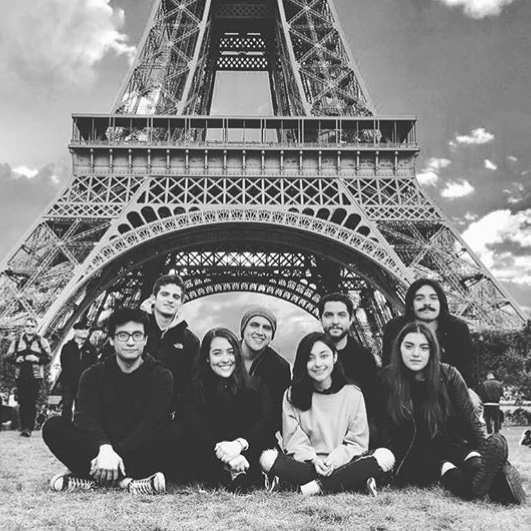

Viajes
Llegar a París fue, irónicamente, como regresar a un estado de pureza. Fue una oportunidad para dejarme llevar por mis impulsos, pero al mismo tiempo para reflexionar, de tal manera que el resultado final fue una metamorfosis inesperada.
Fui la segunda del grupo en llegar, después de Sergio. En el mismo aeropuerto había una estación de tren, lo cual fue muy conveniente. Sabía que no tendría internet fuera del aeropuerto así que aproveché y planeé mi ruta. Me subí al tren y me bajé en mi parada. Ahí tenía que tomar el tranvía que me dejaría relativamente cerca de mi hostal. Tomé el tranvía y me bajé en la parada que indicaba mi celular. Bajé de las vías, pero las instrucciones, desde ese punto, eran aún más confusas. Caminé unos minutos, arrastrando mi pequeña, pero pesada maleta hasta que encontré un Burger King. No me había dado cuenta de lo hambrienta que estaba, así que entré y pedí una hamburguesa. Aproveché la interacción humana para preguntarle en inglés, por supuesto, a la mujer que atendía si sabía dónde estaba mi hostal. Me vio con cara de preocupación y le dijo algo en francés a otra mujer que estaba ahí. Supuse que le había dicho que me ayudara porque la mujer se volteó y me miró con una sonrisa. Le expliqué mi problema y me dijo que me había bajado en la parada equivocada y que tenía que volver al tranvía, bajarme en la siguiente parada y caminar hacia mi hostal. Le agradecí, tomé mi hamburguesa y me senté.
Estaba muy cansada. Comí viendo la nueva temporada de Orange is the new black y cuando terminé de comer me quedé ahí sentada, esperando obtener del sofá, por alguna suerte de simbiosis, fuerzas para seguir mi camino. Y ese es mi problema, entre muchos otros, cuando viajo. Siempre me quejo de que quiero viajar más y conocer muchos lugares, pero cuando al fin tengo la oportunidad de hacerlo, me canso. La gente me desgasta. Las interacciones humanas, aún las más superficiales, me dejan en un estado lamentable del cual solo me puedo recuperar si paso días encerrada en mi habitación. Esto lo sé y lo he sabido por años, pero aun así no puedo evitar que me guste viajar y, como no puedo hacerlo sin pasar por dicho suplicio, me he entrenado para mantener las conversaciones necesarias por el mínimo tiempo posible. Hasta ahora me ha funcionado.
Tomé mi maleta y salí a la calle. Sentí la brisa fresca de la ciudad y pensé en lo diferente que era caminar en un lugar donde no hace calor. Regresé a la estación del tranvía y, después de unos minutos, llegué a mi verdadero destino. Quise volver a leer las instrucciones, pero no aún no entendía nada así que decidí simplemente buscar la calle. Bajé de las vías y me senté en una banca frente a la calle, debajo de un puente. Me fijé en los carriles de bicicletas que había en toda la ciudad y que no solo bicicletas podían usarlos sino también motocicletas. No estaba segura de cuáles eran las reglas, pero ya había visto que ambas los compartían. Volví a mirar mi celular, más por instinto que por encontrar lo que buscaba. En ese momento, escuché un ruido. Volteé la mirada hacia la calle para encontrar un choque entre una bicicleta y una motocicleta. Había un hombre en el suelo y otro parado. Nunca supe qué pasó porque no vi el impacto ni me quedé para ver cómo lo solucionaban. Decidí irme de ahí y, después de alrededor de una hora de caminar, encontré mi hostal. Estaba, aproximadamente, a 5 minutos de la estación.
